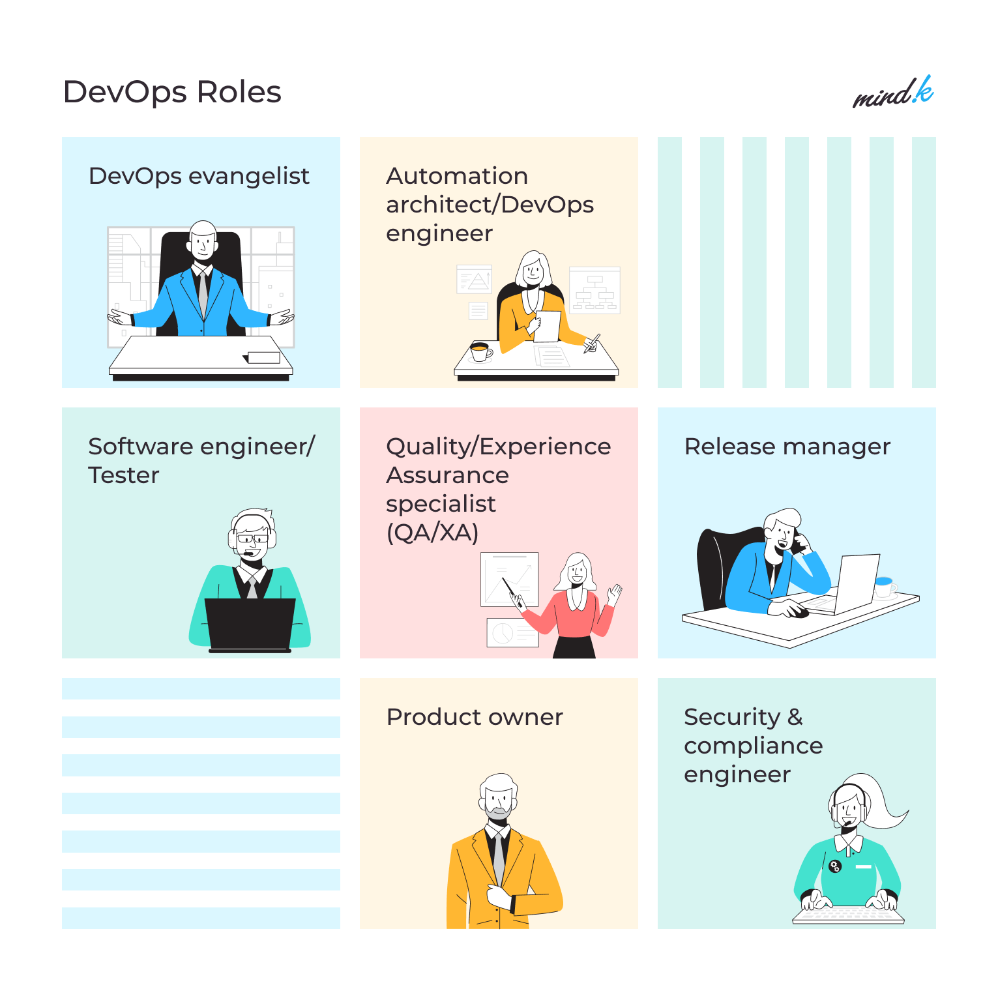

Roles en DevOps
Los roles más importantes son los siguientes:
DevOps Evangelist: Es el líder que promueve la filosofía de DevOps dentro de la organización. Su tarea principal es asegurar que todos los miembros del equipo estén alineados con los objetivos de DevOps y fomentar la colaboración continu
Release Manager: Supervisa las versiones del software y garantiza que se entreguen de manera eficiente. Su papel es coordinar el proceso de lanzamiento, asegurando que todas las pruebas se completen y que la liberación sea estable.
Automation Architect: Este rol se centra en la automatización de los procesos, desde la integración y las pruebas hasta el despliegue. Asegura que los equipos utilicen las herramientas adecuadas para automatizar tareas repetitivas, lo que mejora la eficiencia.
Desarrolladores y Testers: Los desarrolladores son responsables de escribir el código, mientras que los testers se aseguran de que el software esté libre de errores. En DevOps, ambos roles se integran, y los desarrolladores también deben probar su código de manera continua.
Quality Assurance (QA): Asegura que el software cumpla con los estándares de calidad antes de ser liberado a producción. Se enfocan en establecer procesos de calidad para prevenir errores desde el inicio.
Security and Compliance Engineer: Este rol asegura que el software cumpla con las políticas de seguridad y normativas legales. Debe integrar prácticas de seguridad dentro de todo el ciclo de vida del desarrollo, desde el código hasta la producción.